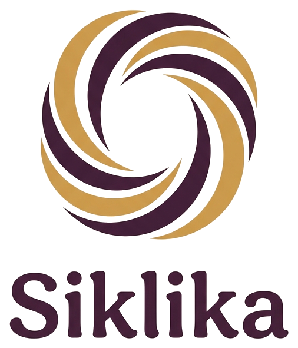

Riwayat lebih dari satu angka
Panjang siklus, usia, dan urutan siklus dipakai bersama agar estimasi tidak hanya meniru rata-rata populasi.
Siklika menganalisis riwayat siklus menstruasimu menggunakan machine learning untuk memberikan estimasi yang personal bukan angka generik. Ditambah chatbot edukasi untuk semua pertanyaanmu tentang kesehatan reproduksi.

Dirancang khusus untuk remaja dan wanita muda Indonesia
Model Random Forest yang dilatih dari 2.412 pasangan siklus nyata. Makin banyak riwayat yang kamu masukkan, makin akurat prediksinya.
Coba SekarangDidukung Google Gemini AI. Tanya apapun soal menstruasi, kram, mood, keputihan — jawaban edukatif, bukan diagnosis.
Mulai NgobrolCatat dan visualisasikan setiap siklus di grafik interaktif. Lihat tren pola siklus dari waktu ke waktu.
Lihat RiwayatPrediksi disertai indikator keyakinan dan interval perkiraan. Data tersimpan di browser kamu saja — tidak dikirim ke server tanpa izin.
Isi usia dan riwayat panjang siklus beberapa bulan terakhir. Semakin banyak riwayat, makin akurat prediksinya.
Model AI menganalisis polamu dan memberikan estimasi panjang siklus berikutnya beserta tingkat keyakinan.
Ada gejala yang bikin bingung? Tanya langsung ke chatbot edukasi untuk penjelasan yang hangat dan terpercaya.
Siklika membaca pola milikmu, lalu menjelaskan batasnya dengan jujur.
Panjang siklus, usia, dan urutan siklus dipakai bersama agar estimasi tidak hanya meniru rata-rata populasi.
Kamu melihat batas bawah, estimasi, dan batas atas. Kalau polanya tidak teratur, statusnya juga ditandai.
Dari kram, mood, sampai keputihan — chatbot memberi konteks edukatif dan mengingatkan kapan harus ke tenaga medis.
Tidak. Estimasi dan chatbot bersifat informatif. Keluhan serius tetap perlu diperiksa tenaga medis.
Minimal satu siklus terakhir sudah bisa. 3–6 siklus sebelumnya biasanya membuat prediksi lebih stabil.
Catatan riwayat disimpan di browser. Prediksi dan chat hanya dikirim ke backend saat kamu memakai fitur itu.
Itu rentang yang sering dipakai sebagai acuan “umum”. Di luar itu, Siklika menandai agar kamu lebih waspada.
Mulai dari prediksi singkat, lalu simpan ke riwayat agar grafiknya terisi seiring waktu.